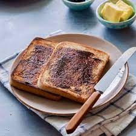

Vegemite Toast

Desription
Vegemite on toast seems simple. And it is. But don't let the simplicity fool you.
This is still a properly yummy thing to eat.
Ingredients
- Bread
- Butter (or margarine)
- Vegemite
Steps
- Put the bread in the toaster. 2-3 minutes should do it but you know how
you like your toast so just aim for that.
- Once that bad boy pops, whip it out and get some butter on it while it is hot.
Everyone knows that the butter melting on the bread is best.
- Spread vegemite on the toast. Do it thick or do it thin. It is your toast so do it how you want.